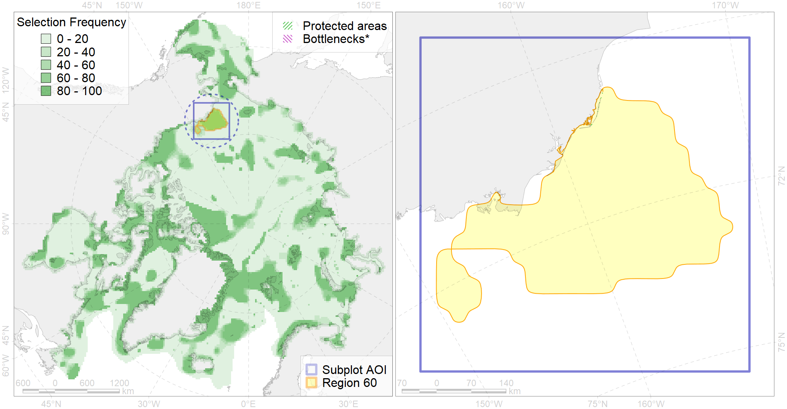

Region 60
Region 60
“ArcNet” scenario 33 achievement for region 60.
Use Accenter for advanced mode.

0
CFs inside of Region completely
13
CFs inside of Region at quarter
15
Complete-targets achievement by Region
32
Half-targets achievement by Region
| CF | Name | Target Achievement for Region | Proportion of Target Achievement in Region | Amount Proportion in Region |
|---|---|---|---|---|
| 5021 | Beluga of the Eastern Chukchi Sea summer core distribution | 91.5% | 89.6% | 76.1% |
| 7004 | NE Chukchi Sea benthic hotspot | 96.6% | 96.3% | 73.0% |
| 3108 | polynya Alaska | 388.5% | 88.4% | 50.0% |
| 1016 | Pacific Walrus Feeding Area | 55.4% | 46.6% | 40.8% |
| 7223 | Kelp forests of eastern Chukchi Sea | 115.8% | 83.6% | 39.0% |
| 2001 | Bearded seal foraging areas in the Chukchi Sea | 154.3% | 56.4% | 38.7% |
| 7123 | II.2.1.3. Western Beaufort outer shelf | 68.8% | 52.7% | 35.0% |
| 9016 | polar bear of the SB (Southern Beaufort Sea) subpopulation distribution | 98.0% | 45.9% | 34.7% |
| 7079 | I.2.1.3. Banks and shoals | 174.1% | 99.4% | 33.3% |
| 5020 | Beluga of the Eastern Chukchi Sea summer distribution | 53.9% | 53.8% | 29.6% |
| 7084 | I.2.2.2.Chukchi Sea Canyons | 100.7% | 90.7% | 27.8% |
| 2038 | Ringed seal foraging areas in the Chukchi Sea | 105.8% | 41.5% | 25.6% |
| 4078 | Fish zoogeography, Arctic Region, High-Arctic Shelf Province, Wrangel – Beaufort District (10E) | 144.8% | 47.5% | 25.6% |
| 2035 | Ribbon seal foraging areas in the Chukchi Sea | 171.1% | 47.3% | 21.7% |
| 7020 | Beaufort bathyal region | 777.2% | 44.1% | 21.3% |
| 7121 | II.2.1.1. Western Beaufort inner shelf | 65.9% | 38.4% | 20.3% |
| 7081 | I.2.1.5. Shelf valleys | 90.0% | 44.5% | 19.4% |
| 2045 | Ringed seal whelping areas in the Chukchi Sea | 73.0% | 41.4% | 18.5% |
| 5109 | Bowhead whale of the Bering-Chukchi-Beaufort population summer core distribution | 16.7% | 16.0% | 17.0% |
| 5116 | 5116 Beluga EBeaufort Sea autumn core | 64.3% | 47.1% | 17.0% |
| 4013 | Feeding/nursery area of the Bering cisco (Coregonus laurettae), Asian populations (F17) | 43.5% | 41.9% | 16.4% |
| 3030 | Marginal Ice Zone distribution in July in the Chukchi Sea LME | 63.3% | 53.7% | 16.0% |
| 2008 | Bearded seal whelping areas in the Chukchi Sea | 61.7% | 41.0% | 15.7% |
| 7037 | Amerasian shelf transitional zone | 136.5% | 82.8% | 15.4% |
| 1018 | Pacific Walrus Summer-Autumn Distribution | 59.6% | 25.5% | 15.0% |
| 5117 | 5117 Beluga EChukchi Sea autumn core | 51.8% | 30.1% | 14.5% |
| 7122 | II.2.1.2. Western Beaufort middle shelf | 46.2% | 22.5% | 13.9% |
| 5105 | Bowhead whale of the Bering-Chukchi-Beaufort population autumn distribution | 43.7% | 34.4% | 13.8% |
| 7080 | I.2.1.4. Shelf plains | 322.8% | 37.0% | 13.1% |
| 5052 | Gray whale summer feeding areas | 33.6% | 15.4% | 12.5% |
| 4005 | Spawning areas of the Pacific Capelin (Mallotus villosus catervarius) in Alaska (F11) | 59.6% | 15.6% | 12.3% |
| 9001 | polar bear of the AB (Arctic Basin) subpopulation distribution | 44.8% | 44.6% | 12.3% |
| 4022 | Feeding area of the Inconnu (Stenodus leucichthys nelma), American populations (F 22) | 32.4% | 19.8% | 12.1% |
| 6050 | Spectacled eider (Somateria fischeri) moulting grounds | 27.7% | 19.4% | 11.9% |
| 7082 | I.2.1.6. Outer shelf with medium to high profile; from the Blue Habitats map, Harris et al., 2014 | 123.6% | 71.3% | 11.4% |
| 5108 | Bowhead whale of the Bering-Chukchi-Beaufort population summer distribution | 33.5% | 20.7% | 11.0% |
| 5106 | Bowhead whale of the Bering-Chukchi-Beaufort population spring distribution | 16.3% | 16.1% | 11.0% |
| 8030 | Salt marshes of the Beaufort Sea LME | 20.0% | 12.2% | 10.4% |
| 9034 | polar bear denning areas of SB (Southern Beaufort Sea) subpopulation | 9.0% | 9.0% | 9.4% |
| 4034 | Feeding area of the Taranetz’s Char (Salvelinus taranetzi) (F 31) | 25.6% | 15.2% | 9.3% |
| 1017 | Pacific Walrus haulouts | 11.6% | 11.3% | 9.2% |
| 7130 | II.2.2.1. Western Beaufort Slope | 29.7% | 16.2% | 8.3% |
| 4050 | Range of the Pollock (Theragra chalcogramma) (F 43) | 128.8% | 18.8% | 8.3% |
| 3005 | Fast Ice distribution in the Beaufort Sea region | 94.2% | 8.7% | 8.1% |
| 7077 | I.2.1.1. Coastal domain | 25.3% | 23.5% | 7.7% |
| 3004 | Fast Ice distribution in the Chukchi Sea region | 112.7% | 17.0% | 7.6% |
| 4019 | Feeding area of the Vendace, Least cisco (Coregonus sardinellа), American populations (F 20) | 27.3% | 13.7% | 7.6% |
| 4016 | Feeding area of the Broad whitefish (Coregonus nasus), Euro-Asian populations F 19 | 20.2% | 14.3% | 7.4% |
| 4009 | Feeding / nursery area of the Arctic Cisco (Coregonus autumnalis), American populations (F 14) | 15.1% | 11.1% | 6.7% |
| 7042 | Beaufirt transitional zone | 21.4% | 5.9% | 6.4% |
| 7183 | VII.3.5. Deep parts of canyons (below slope) | 12.1% | 8.7% | 4.9% |
| 3032 | Marginal Ice Zone distribution in July in the Beaufort Sea LME | 13.5% | 12.7% | 4.7% |
| 2054 | Spotted seal foraging areas | 31.3% | 6.2% | 4.7% |
| 6027 | Glaucous gull (Larus hyperboreus barrovianus) breeding grounds | 33.1% | 10.2% | 4.4% |
| 6107 | 6107 Fratercula corniculata breeding colonies | 14.4% | 5.6% | 4.0% |
| 4070 | Local forms of the White-Sea herring (Clupea pallasii) (F8) | 14.3% | 8.1% | 4.0% |
| 4044 | Range of the Pacific cod (Gadus macrocephalus) (F 38) | 109.3% | 7.4% | 3.9% |
| 4011 | Feeding area of the Lake whitefish (Coregonus clupeaformis) (F 16) | 8.7% | 8.2% | 3.9% |
| 2042 | Ringed seal whelping areas in the Beaufort Sea | 11.3% | 5.0% | 3.8% |
| 4024 | Distribution of the Chum Salmon (Oncorhynchus keta) (F24) | 45.9% | 5.4% | 3.2% |
| 6010 | Brent goose (Branta bernicla nigricans) American breeding&moulting grounds | 8.4% | 5.9% | 3.0% |
| 4006 | Feeding/nursery area of the Pacific rainbow smelt (Osmerus dentex) (F12) | 14.8% | 5.6% | 2.9% |
| 2005 | Bearded seal whelping areas in the Beaufort Sea | 8.7% | 5.1% | 2.9% |
| 4042 | Range of the Saffron cod (Eleginus gracilis) (F 36) | 43.8% | 6.5% | 2.9% |
| 7083 | I.2.2.1. Chukchi slope | 16.1% | 9.6% | 2.7% |
| 4065 | Range of the Pacific Halibut (Reinhardtius hippoglossoides matsuurae) (F 50) | 77.8% | 8.0% | 2.6% |
| 4023 | Feeding/migration area of the Pink Salmon (Oncorhynchus gorbuscha), native distribution (F23) | 39.1% | 5.9% | 2.6% |
| 9004 | polar bear of the CS (Chukchi Sea) subpopulation distribution | 6.7% | 5.8% | 2.6% |
| 2036 | Ringed seal foraging areas in the Beaufort Sea | 7.5% | 3.3% | 2.6% |
| 3018 | Marginal Ice Zone distribution in April in the Chukchi Sea LME | 17.8% | 3.6% | 2.3% |
| 4058 | Range of the Arctic flounder (Liopsetta glacialis) (F48) | 26.8% | 3.5% | 1.9% |
| 8029 | Salt marshes of the Chukchi Sea LME | 3.9% | 2.9% | 1.8% |
| 4077 | Fish zoogeography, Arctic Region, High-Arctic Shelf Province, Laptev – East-Siberian District (10D) | 9.8% | 5.2% | 1.3% |
| 6045 | Stellers eider (Polysticta stelleri) Pacific moulting&migration stopovers | 2.2% | 2.0% | 1.2% |
| 4004 | Range of the Pacific Capelin (Mallotus villosus catervarius) (F11) | 34.5% | 2.5% | 1.2% |
| 7179 | VII.3. Makarov and Canada Basin VII.3.1. Rises (slope foot) | 2.9% | 2.5% | 1.1% |
| 6073 | King eider (Somateria spectabilis) Pacific moulting&migration stopovers | 1.9% | 1.6% | 1.1% |
| 4053 | Range of the Fourhorn Sculpin (Myoxocephalus quadricornis) (F 45), Euro-Asian populations | 30.2% | 1.8% | 1.0% |
| 4041 | Range of the Polar Cod (Boreogadus saida) (F35) | 6.8% | 2.6% | 0.9% |
| 4055 | Range of the Shorthorn Sculpin (Myoxocephalus scorpius) (F 46), American populations | 24.3% | 1.4% | 0.9% |
| 3019 | Marginal Ice Zone distribution in April in the Beaufort Sea LME | 7.0% | 0.9% | 0.9% |
| 4037 | Distribution of the Glacial cod (Arctogadus glacialis) (F34) | 8.2% | 2.0% | 0.9% |
| 5112 | Arctic Cetaceans (beluga, bowhead, narwhal) winter habitats as predicterd by MIZ | 1.8% | 1.5% | 0.8% |
| 6015 | Black guillemot (Cepphus grylle mandti) breeding grounds | 3.8% | 0.8% | 0.6% |
| 7182 | VII.3.4. Abyssal mountains | 2.1% | 1.7% | 0.6% |
| 4096 | Range of the Glacial eelpout (Lycodes frigidus) | 6.8% | 1.7% | 0.6% |
| 6085 | Horned puffin (Fratercula corniculata) breeding colonies | 1.4% | 0.6% | 0.5% |
| 7023 | Canada Basin abyssal region | 3.4% | 3.3% | 0.5% |
| 6066 | Common eider (Somateria mollissima v-nigrum) breeding&moulting grounds | 0.7% | 0.7% | 0.4% |
| 4079 | Fish zoogeography, Arctic Region, Arctic Abyssal Province (11A -Scandian, 11B - Central-Arctic and 11C - Baffin Deep-sea Districts ) | 6.1% | 1.0% | 0.3% |
| 7181 | VII.3.3. Abyssal hills | 2.0% | 1.0% | 0.3% |
| 4062 | Range of the White Sea eelpout (Lycodes marisalbi), American population (F 51) | 1.5% | 0.2% | 0.2% |
| 4032 | Range of the Arctic skate (Amblyraja hyperborea) (F2) | 1.5% | 0.1% | 0.1% |
| 4091 | Fish zoogeography, Arctic Region, Subarctic Transitional-Pacific Province | 0.3% | 0.1% | 0.1% |
| 7180 | VII.3.2. Abyssal plains | 0.4% | 0.4% | 0.1% |
| 4090 | Fish zoogeography, Arctic Region, Subarctic Transitional-Atlantic Province, Euro-Asian Bathyal District | 0.1% | 0.0% | 0.0% |
| 3050 | Multiyear Ice distribution in September in the Beaufort Sea LME | 0.0% | 0.0% | 0.0% |